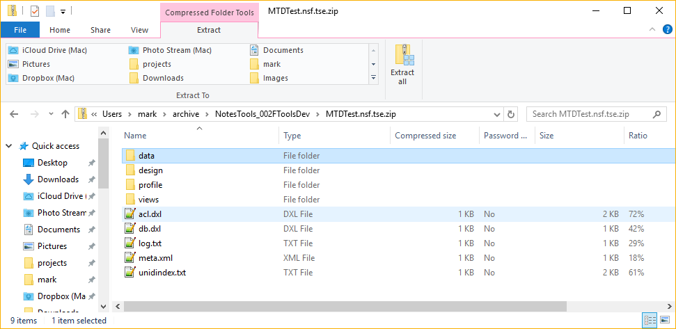

Archive File Format
Teamstudio Export archive files are designed to be simple to access without requiring any proprietary APIs or tools. All of the files in the archive are text, either XML or plain text. The files are combined into a single file using standard Zip compression.
Directory Structure
The easiest way to explore an archive file is to add a .zip extension and then open the file in Windows Explorer.

Data Folder
The data folder contains a file for every data document in the database. Each file is XML, using the Domino DXL format. While this is largely self-explanatory, a DTD for DXL is available at The Domino DTD. The name of each file is noteid.dxl where noteid is the id of the document, expressed as an 8 digit hexadecimal number.
Design Folders
The design and design2 folders have the same format as the data folder, with a DXL file for each design element named using the note id.
Note
Domino supports two different styles of DXL: binary and default. Both are standard text-based XML, but in binary mode complex data values are exported as base-64 encoded versions of the raw binary data stored in the nsf file. The binary mode offers maximum fidelity but it is impossible to interpret without a deep knowledge of Domino internal data structures. Prior to archive version 4, Teamstudio Export only uses the default mode that converts even complex data values to human-readable XML elements. Archive version 4, introduced with Export 3.0, also includes binary mode for forms and views to ensure that the archive contains complete design information. The human-readable DXL is stored in the design folder and, from Export 3.0 onwards, the binary-mode DXL is stored in the design2 folder.
Profile Folder
The profile folder has the same format as the data folder, with a DXL file for each profile document named using the note id.
Note
The profile folder was added in archive version 2.
Views
The views folder contains an XML file for every view and folder in the database. Unlike the data and design folders, there is no Domino standard for view data. The format we have adopted is a very simple UTF-8 encoded XML with the following elements.
view
The root element, contains a sequence of document, category, and total elements.
category
A container element corresponding to a category row in the view. It has a single, optional attribute, indent, identifying how many spaces the categorized value in the row should be indented within its column. If this attribute is omitted, the value is not indented. Indented categories occur when a categorized column contains a value such as a\b. This will generate two category rows in the view. The first with value a and no indent and the second with category b and indent="1". A category element contains a sequence of value elements.
document
A container element corresponding to a document row in the view. Every document element has a noteId attribute specifying the 8-digit hexadecimal note id of the document. As with categories, there is also an optional indent attribute specifying how many spaces the final data value should be indented within its column. Indented documents occur when you are using a response hierarchy and the document is a response or response to response. A document element contains a sequence of value elements.
total
A container element containing view totals (or averages etc depending on the view definition.) A total element contains a sequence of value elements.
value
A wrapper for a view column value. Each category, document and total element contains one or more value elements for the column values. A value element may be empty (i.e. <value />) if it is an outer column in a categorized view. Otherwise it will contain a value in standard DXL format (i.e. <text>, <number>, etc.)
acl.dxl
This file is the DXL representation of the database ACL.
Note
acl.dxl was added in archive version 2.
audit.txt
This is a UTF-8 encoded plain-text log file largely generated during the DXL export. It contains high-level summary information about the archiving process such as the user that performed the archive, the start and finish times and counts of the number of documents that archived successfully or encountered errors. This file complements the older log.txt that contains lower level information about the run, such as the note ids of any documents that could not be archived.
db.dxl
This file is created by DXL exporting an empty collection from the database. It captures database-level information such as the replica id.
log.txt
This is a plain-text log file generated during the DXL export. It captures any errors and warnings generated during the export, along with some trace debugging information. Any errors and warnings in this file will have been displayed to the user when the archive was created, but we retain the log file for future review. This file is intended mainly for troubleshooting and debugging: if you are interested in higher-level information about the run such as the total number of documents processed then see the separate audit.txt file.
Note
From archive version 3 onwards, log.txt is UTF-8 encoded. Earliers versions were inconsistent in their encoding, with a mix of machine-native and LMBCS.
meta.xml
This is a metadata file primarily used by Teamstudio Export to maintain the UI. It consists of a single archive element with the following attributes
- server - the server from which the database was archived
- path - the path of the database on that server
- title - the database title
- archiveDate - a timestamp on which the archive was created. Since this is only used by Teamstudio Export, it is stored in a .NET-friendly format. Specifically, the value is the number of 10ms ticks since 1/1/0001 00:00 Gregorian. This is the same origin as the .NET DateTime type (see System.DateTime) but since Notes only stores times to a 10ms resolution, we divide DateTime.Ticks by 100000 to convert from 100ns ticks to 10ms ticks.
- archiveVersion - a version indicator to denote significant changes to the archive format. Currently set to "6". Future releases will use this to identify databases that should be re-archived. See Archive Version History below for details.
- demoMode - optional. Set to true if the archive was generated with a demo version of Export that limits the number of entries in each view. If false or omitted, the archive was generated with a full version of Export.
unidindex.txt
This is a plain-text CSV file generated during the export to map NoteIDs to UniversalNoteIDs (UNIDs.) Teamstudio Export itself uses note ids to identify documents, but doclinks use UNIDs so we need an index to convert UNIDs to file names during HTML export.
Archive Version History
| Number | Date | Export Version | Comments |
|---|---|---|---|
| 1 | January 2018 | 1.0.0 | Initial release |
| 2 | February 2018 | 1.0.1 | Add support for database ACL and profile documents |
| 3 | October 2018 | 2.1.0 | Change log.txt encoding to UTF-8 |
| 4 | October 2019 | 3.0.0 | Add the design2 folder with binary mode design DXL |
| 5 | December 2019 | 3.1.0 | Add the audit.txt log |
| 6 | May 2020 | 3.1.1 | Always use period for decimals in view column data |
Support
The archive file format is intended to be public and supported. If you have any questions about the file format, please contact us at teamstudio.com.